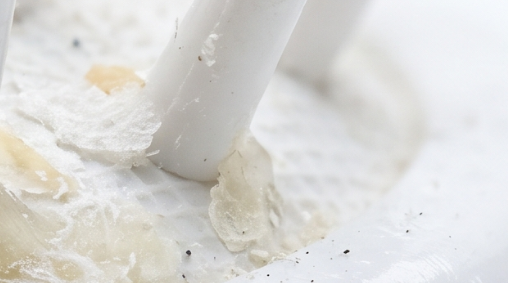

Bactéries dans une brosse à cheveux : ce qu'il faut savoir
La réponse courte : oui, votre brosse à cheveux héberge des bactéries, et probablement plus que vous ne l'imaginez. Voici ce qu'elles provoquent réellement, et comment limiter leur prolifération sans tomber dans l'excès.

Pourquoi une brosse à cheveux devient un terrain bactérien
Une brosse à cheveux accumule des cellules mortes du cuir chevelu, du sébum, de la poussière et des résidus de produits coiffants. Cette combinaison, associée à l'humidité (surtout si vous brossez juste après la douche), crée un environnement idéal pour la prolifération bactérienne.
Plus la brosse reste longtemps sans nettoyage, plus cette accumulation se densifie. Et à chaque passage, ce qui s'est développé dans les picots se redépose sur vos cheveux et votre cuir chevelu.
Ce que ça provoque concrètement
Les conséquences restent généralement modérées, mais réelles :
- Irritations du cuir chevelu : démangeaisons légères, sensation de picotement après le brossage.
- Pellicules favorisées : un cuir chevelu irrité produit plus facilement des pellicules.
- Imperfections cutanées : au contact des mèches sur le front ou les tempes, les résidus peuvent favoriser l'apparition de petits boutons.
- Odeur : une accumulation ancienne dégage souvent une odeur de renfermé caractéristique.
Faut-il pour autant désinfecter sa brosse quotidiennement ?
Non. Un nettoyage quotidien serait excessif et inutile. L'équilibre se trouve dans la régularité : retirer les cheveux chaque jour (ce qui limite déjà fortement l'accumulation), et faire un nettoyage en profondeur une à deux fois par mois pour éliminer sébum et bactéries en profondeur.
Les brosses les plus à risque
Les brosses aux coussins épais et aux picots serrés retiennent davantage l'humidité et les résidus que les modèles à picots espacés. Le matériau compte aussi : le plastique se nettoie facilement à l'eau, tandis que le bois et les poils naturels demandent plus de précautions et sèchent plus lentement.
Une brosse plus facile à garder saine
Moins il reste de cheveux et de résidus coincés dans les picots, moins les bactéries ont de terrain pour proliférer. Birushi facilite ce geste : une pression libère instantanément les cheveux accumulés, pour un entretien qui ne prend plus jamais dix minutes.
Découvrir Birushi — 69€En résumé
Oui, une brosse à cheveux accumule des bactéries — c'est un phénomène naturel, pas une anomalie. La bonne nouvelle : un entretien simple et régulier suffit à limiter largement leur prolifération, sans excès de désinfection. Retirer les cheveux souvent, nettoyer en profondeur une à deux fois par mois, et bien sécher entre deux utilisations.